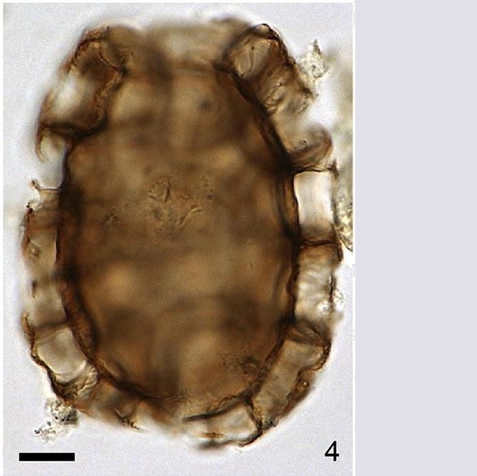

CYSTS LIST
POLYKRIKOS
Surface |
Shape |
Process |
Remarks |
Species |
Central body (um.) |
Process (um.) |
Image |
GranulateBrown |
Spherical |
Hollow. AcuminateBase circular, striae at base |
Striation at base of processes |
Polykrikoshartmanii | 46 to 60 (D) |
8 to 12 |
|
Coarse reticulumSmoothLight brown |
Elongate |
Reticulations smaller in the middle than on the polar side |
Coarse reticulationNetwork of ridges |
Polykrikoskofoidii | 72 to 134 (L)48 to 63 (W) |
6 to 18 |
 |
Coarse reticulationDark brown |
Rectangular to elongate |
Reticulate pattern |
Much reducedfibrous surface |
Polykrikosquadratus | 46 to 66 (L)30 to 50 (W) |
1 to 8 |
|
Smooth solid endophragmThin fibrous periphragmDark brown |
Elongate |
Cylindricaltrumpet-shaped processesare separated |
Shelf-like ornamentDiscrete processes |
Polykrikosschwartzii | 60 to 82 (L)41 to 55 (W) |
8.5 to 14 |